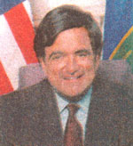
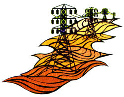

It was in 1839 that Welsh scientist Sir William Grove first showed that hydrogen and oxygen could be combined to form electricity and water. Still, myriad technological hurdles stood between this initial discovery and any practical application, not least of which was devising a way to efficiently and inexpensively mass-produce hydrogen.
Scientists would never get that far: The early 1900s saw the rise of the internal combustion engine, with its easy reliance on fossil fuels, and suddenly hydrogen power was out before it was ever in.
Research continued, but sparingly, and fuel cells were relegated to niche applications like providing power-and drinking water-for NASA's space shuttle missions.
Faced with a firmly entrenched fossil fuel infrastructure which was churning out a relatively cheap and seemingly inexhaustible product governments and industry had little motivation to bring fuel cells to the masses. But then came the 1970s and the World Oil Crisis (laying bare the dangers of foreign dependencies), coupled with a growing awareness of the environmental and human health costs of combusting fossil fuels, and suddenly there was plenty of incentive to go round.
The last 30 years have heard ever louder, more insistent calls for energy alternatives and pollution controls-reverberating in the Clean Air Act and Amendments of 1963, '70 and '90, and more recently in the Kyoto Protocol.
As a result, in recent years, researchers have found themselves with ample reason and a good deal of money (more than a billion to date from government, utilities, private investors and particularly the auto industry) to investigate and develop commercially feasible fuel cell systems.
That this long-stalled technology is now poised to explode onto the market is evidence of how quickly the wheels of progress can turn when provided enough grease.
[ BACK ]
With the increasing demand for renewable energy, photovoltaic panels and solar energy are finally staking their claim in the worldwide power market. Discovered at Bell Laboratories in the early 1950s, photovoltaic panels, which convert sun directly intoelectric power, have become more affordable over the years as the technology has become more efficient. In fact, after spending $1.4 billion developing solar power over the last 20 years, the United States leads the world in solar development with more than 10 homes using photovoltaics (PVs) as a primary source of power. Consequently, prices for solar power have dropped from over $40,000 per watt in the early 1960s to $6 per watt today. And technolgy has advanced so much that photovoltaic power plants can now equal the entire electric production of the United States by using only 13,125 square feet of land space-an area that would cover less than 12% of the state of Nevada.
Nevertheless, electricity from solar power still has a long way to go before it can compete with traditional power (according to a 1997 New York Times article, costs still need to fall to $1 or $1.50 per peak watt in order to keep up with the competition). That said, nationwide deregulation will open rural and urban electric utility markets and technolgy will continue to advance and test the limits of PV potential. Already, solar technicians in the U.S. have developed film-thin photovoltaic materials that an replace roof shingles. Even in our country's major urban centers, self-generating solar power is on the rise. Witness the Conde Nast Tower going up in Times Square in New York City. Its east and west facades will employ 3,000 square feet of PV panels capable of generating 15 kilowatts of electricity for the office building.
0n the global front the U.S. is not alone in seeking solar alternatives. Japan has bolstered its PV national budget at least 15% each year since 1992 and fossil fuel giant Shell spearheaded a project earlier this year to illuminate 50,000 homes in South Africa with solar energy. But the latest technology is coming from Israel, where on July 1 the Solmecs Corporation launched a new type of photovoltaic cell with enough energy output to generate solar energy for a small village in northern Greece. These cells' extra power comes from their doublesided or bifacial construction. According to Solmecs Corporation, bifacial PV cells yield at least 20% more energy than standard units. Dan Fleshler, of the Solmecs Corporation, and founder, Professor Herman Branover, of Ben-Gurion University, are convinced that if the real-world test is successful, the international market for their panels will break wide open. This test is the first practical use of the double-sided cells.
The Solmecs Corporation isn't alone when thinking about practical uses for solar energy. Don Sather, a retail store owner in Colorado has volunteered to be an experimental agent for a solar energy program trying to get off the ground. His GigHorne Ace Hardware store is the first retail space in Colorado to use a net metering program in which the local utility company agrees to buy back any excess energy produced by the PV panels installed at the store. The idea is that the PVs will eventually pay for themselves. Sather's retail store uses daylighting, radiant heating and extra insulation, energy efficient windows and lighting, and a solar wall that collects and disperses heat throughout the building. His goal is a 10% return of investment. "It will be a tremendous savings for the U.S. if the introduction of natural lighting is successful," he said. "It can be used by other stores to save billions of dollars." While GigHorne Ace Hardware is showing how solar technology can be more affordable, the Smithsonian Institute shows how it can be more practical. At the Enid A. Haupt Garden in Washington, D.C., last summer, the Smithsonian fea tured an exhibit called "Under the Sun: An Outdoor Exhibit of Light," where a solar cooker, a solar powered lawn mower, a portable battery charger and a solar powered lantern were run by photovoltaic panels. Secretary of Energy Bill Richardson introduced the traveling exhibit, saying that "due to Energy Department research, we now can harness the energy of the sun to power homes, run laptop computers and even cook food. This summer's visitors to the nation's capital," he went on to say, "can sit in a solar sundial chair, walk through the solar powered glass pavilion, and see the solar powered lawn mower that safely motors its way around your lawn with no pushing, and with no dangerous fumes."
With any luck these solar sensations will soon become common enough to escort an over-populated world choked by greenhouse gasses into a brighter future.
-Torri Barco
[ BACK ]
By Sam Martin
The deregulation of the nation's electric utilities doesn't exactly make for titillating dinner conversation. In fact, it's so filled with bureaucratic jargon and muddled procedure that finding out exactly how it's going to revolutionize the way we get power may seem hardly worth the time.
But that doesn't mean deregulation-or restructuring-won't affect us. On April 15, U.S. Secretary of Energy Bill Richardson announced plans for a new federal law called the Comprehensive Electricity Competition Act (CECA), which, if ratified, would give customers in every electric market in the country the freedom to choose their power source by 2003. The bill would also require distribution utilities to purchase 7.5% of their energy from renewable energy sources. in order to understand what this can do for you, it's good to know a few of the facts and a little history of the issue.
In the simplest terms, electric utilities do three basic things: generate power, transmit power and distribute power. The generators are the central power plants that actually create electricity, which is then transmitted via the grid to distribution centers in the community. Before the invention of smaller renewable resource generating companies, consumers had no choice but to get their power from these utilities and pay the prices they set. Restructuring aims to separate these three entities by diversifying ownership, which, advocates say, will mean lower costs, better service and a friendlier approach to the environment.
But deregulation will not happen overnight. in fact, concerns over the electric monopoly date back to 1935, when the federal government first began regulating utility costs. Restructuring spent the next 43 years on and off federal drawing boards, until 1978 when Congress passed the Public Utilities Regulatory Policies Act, a move that basically forced state-run utility giants to start buying electric power from smaller generators, including renewable resource generators running off solar, wind and hydro power. Needless to say, this was a windfall for alternative energy providers, and by 1994 renewables accounted for 14% of all electricity generated in the U.S. With the first hints of deregulation, the $200 billion a year electric utility companies were introduced to genuine competition for the first time ever.
And so, after much kicking and screaming, the electric Utilities seem to he going the way of the telephone monopoly and deregulation on a federal level is taking shape. In 1992 Congress voted into law the Energy Policy Act, forcing transmission utilities to deliver power from the grid to distributing utilities (both independent and state-run) at regulated prices. This wide ranging law essentially created a working arena for independent, alternative energy plants by allowing them to use the grid to transmit power for distribution. By 1996, 29 states, with California, Massachusetts, New Hampshire and Rhode Island leading the pack, had passed or were working on official restructuring. And by the start of 1999, 10% of the U.S. electric retail market was open to competition and 20 states had already pushed through deregulation, sending a strong signal to the Clinton administration to take federal action.
Ambitious as CECA is, there are still quite a few kinks to iron out. A big one is figuring out who will be responsible for paying maintenance costs once the large utilities stop making as much money. Plus, some states like Alabama oppose deregulation because it already pays some of the lowest rates in the country and the state claims that deregulation would cause local rates to rise as the demand for Alabama-produced energy grows. Nevertheless, deregulation is, as Richardson puts it, "the most active issue in legislatures right now," and with Texas and Ohio joining the majority voice on restructuring, there's no reason to think it's going away anytime soon. After nearly a century of control, it could be lights out for the utility monopoly.
[ BACK ]
0ne of the world's most overlooked potential sources of energy, biomass, could emerge as the fuel of the next millennium. Biomass is any kind of renewable organic matter that can be converted to energy, including crops and agricultural residues, commercial wood and logging residues, animal wastes, the organic portion of municipal solid waste and methane gas from landfills. Currently, most biomass that is used goes for cooking and heating in rural areas. But it could do so much more. According to Dan Reicher, an assistant secretary at the U.S. Department of Energy (DOE), biomass can be used as an alternative to traditional fossil fuels in producing heat, electricity, plastics, fuels and more.
In 1991 DOE launched the Biomass Power Program to encourage and facilitate the expanded use of biomass, with an eye toward boosting local economies, increasing domestic job growth, promoting sustainable agriculture and improving the environment, while at the same time decreasing our reliance on fossil fuel imports.
The potential economic and environmental benefits are many. Since biomass power systems can be fueled by residues from forestry and agricultural industries, the need for landfills to dispose of such wastes would be lessened. DOE has also reported that in agricultural areas, biomass power systems have succeeded in reducing serious air pollution problems stemming from in-field burning of crop residues like rice straw. Additional economic benefits include the creation of a market for sustainable forestry products, as well as for energy crops grown specifically for use in power systems.
Recently, U.S. Senator Tom Harkin (D-lowa) introduced legislation that would have given utility companies a 1.5 cents-per-kilowatt-hour tax credit for using such biomass energy sources. "Rural economies across the country need a boost," argues Harkin, an advocate of biomass since the 1970s. "Biomass has the potential to provide billions in additional income to farm families and still protect our environment." Farmers could grow energy crops such as willows, switchgrass and aspen poplars. Though the legislation was not successful, Reicher believes that Americans soon will see federal legislation that encourages the use of biomass-perhaps as part of a larger electricity restructuring initiative.
Biomass has two distinct advantages over traditional fossil fuels. First, the diversity of organic materials from which biomass can be harvested, including wood wastes, sewage sludge and municipal solid wastes, makes it a virtually limitless (and entirely domestic) option. Second, the burning of fossil fuels releases millions of tons of carbon dioxide (C0 2 ) into the environment, thus contributing to global warming. The effective use of biomass releases substantially less C0 2 , and therefore could play an important role in reducing greenhouse gas emissions. In fact, when highyield wood or other energy crops are grown sustainably, their later burning releases essentially the same amount Of C0 2 that was absorbed during photosynthesis, with no net change in greenhouse gas levels.
Biomass combustion also produces much lower levels of pollutants such as mercury and sulfur. And though biomass does release levels of nitrogen oxide that raise some environmental concerns, the amount is still 80% lower than that produced by coal-fired electric plants. Currently, proposals for refitting existing coal plants to burn biomass, with or without coal, are generating enormous interest.
While biomass still faces many hurdles-not least of all overcoming existing inefficient and expensive technologies for its use-this renewable resource is beginning to emerge as a viable energy option for the future.
-Amanda Druckman
[ BACK ]
No longer the hulking beasts of Don Quixote's wild imagination, modern-day wind turbines offer an inexpensive and renewable energy alternative to a fossil fuel burning world. In Burlington, Vermont, at this year's Windpower '99 conference, U.S. Secretary of Energy Bill Richardson announced the government's renewed commitment to wind power, sketching out a bold plan that would see 5% of the nation's electrical needs met by wind energy by 2020, and an equal percentage of the federal government's own needs met as early as 2010. And while just a short time ago such a plan might have been dismissed as pie in the sky, today it doesn't seem too far out of reach. According to the National Renewable Energy Laboratory, the U.S. has enough wind resources to produce more power by wind than we currently use. Presently, a scant one-tenth of 1% of the nation's electricity is generated by wind power. "We think that wind technology has the most potential of any renewable energy technology right now," Richardson contends.
As if on cue, NASA launched a satellite in June called QuickScat, designed to record ocean winds and provide detailed photographs that will enable researchers to better understand wind patterns and weather abnormalities, as well as to more accurately predict the weather. This and other initiatives could mean real advances for wind power.
And maybe just in time. Across the U.S., wind farms have cropped up in Pennsylvania, Texas, New Mexico, Colorado and the Northwest. All of this activity is no coincidence: The wind industry, like other renewable energy sectors, is seeking to make inroads in the the newly competitive market left by utility deregulation, at a time when sweeping concern for soaring global climate temperatures has people looking for cleaner power sources.
The good news for consumers is that, in recent years, increased demand and greater efficiency has led to falling prices. According to the Electric Power Research Institute, wind power costs have dropped considerably since the 1980s, when prices soared to about 38 cents per kilowatt hour (kWh). Now a price range of 3 cents to 6 cents per kWh makes it a feasible alternative to coal, gas and nuclear power. And not only is wind power competitive in price, but it produces no air pollution or greenhouse gases, and it exists in harmony with agriculture--a direct benefit for farmers and ranchers, whose land the majority of wind turbines are built on.
More than 36 utility companies now offer wind as an electricity resource, and that number is likely to grow given the government's recent pledge. With wind and other renewables making real headway in the energy market, our quest for cheap clean power isn't just jousting with windmills anymore.
-Robin Lauzon
[ BACK ]
America's $200 billion electricity industry consumes more fossil fuels and spews more harmful pollutants into the environment than any other sector, save transportation. Fossil-fuel fired power plants are responsible for a full two-thirds of all of the sulfur dioxide (S0 2 ) pollution in the U.S., annually emitting some 12.5 million tons of this chief acid rain ingredient. Electric power plants are also the source of roughly at one-third f the nation's nitrogen oxides (NOx) and carbon dioxide (C0 2 ) emissions, annually discharging 7.2 million tons of the former and 2.1 billion tons of the latter, contributing in near-peerless fashion to both smog production and global warming. The real price of power will never show in your bill, but in the air, soil and water.
The Environmental Protection Agency (EPA) has traced 67 air toxics-defined as "pollutants which are known or suspected to cause cancer or other serious health effects such as birth defects or reproductive effects"-to utility emissions, including arsenic, nickel, chromium, radionuclides and mercury. Of these, mercury has been identified as the greatest potential public health risk, largely because it bioaccumulates in the fish we eat. As of February 1998, 39 states had issued mercury advisories for one or more bodies of water, while another nine states had issued advisories statewide. The EPA estimates that coal-fired electric plants account for about a third, or 52 tons, of manmade mercury emissions in the U.S. each year.
At first blush, the ongoing deregulation of the electric industry would seem to hold promise for clearing the air. After all, it will open the market to cleaner greener power options, right? In theory, yes. But in practice, quite the opposite seems to be happening. Last summer, the Ohio Public Information Research Group (Ohio PIRG) released a report indicating that since 1992, when deregulation began in earnest, coal-generated electric power has increased 8% in Ohio (home to the infamous "Dirty 21" coal-fired plants) and 15.8% nationwide. Wisconsin PIRG issued a similar report, claiming that C0 2 levels in that state have risen by 9.7 million tons in the last seven years.
To find the root of this trend one need look no further than the bottom line. Many of the nation's older, coal-fired plants were "grandfathered" under the federal Clean Air Act and are thus exempt from meeting the tough air quality standards imposed on newer plants built since 1971. Because these dirty dinosaurs are not compelled to invest in costly environmental upgrades, they are able to offer some of the cheapest electricity on the grid.
Consumers who for the first time ever are able to decide where their power will come from seem not surprisingly to be opting for the lowest rates. The federal government would like to give clean power a leg up by requiring distribution utilities to purchase a set minimum of electricity from renewable sources, no matter the cost.
Residential fuel cell systems hold the potential to deliver the best of both worlds, allowing consumers to have their cheap power and clean air, too. According to a 1997 White House fact sheet issued as part of the President's Initiative on Global Climate Change, the average building could cut is C0 2 emissions in half by switching to electricity and hot water from a natural-gas powered fuel cell. And with the technology promising a 20% savings over current electricity rates, consumers won't have to choose between green in their wallets and green in their wires.
[ BACK ]
|
 WIND Off Chasing Giants |
 |
|